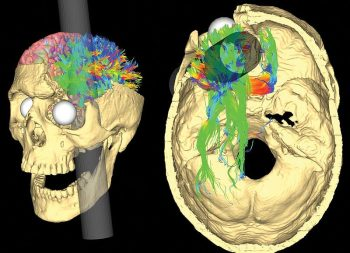
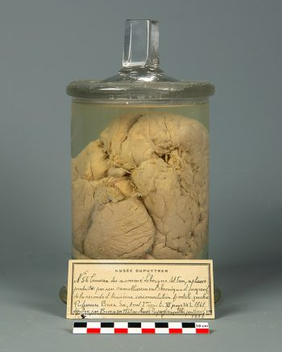
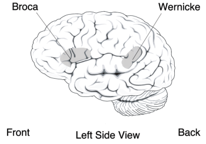

4.2: Historical Methods – Studies of Brain Damage in Humans
Early insights into brain-behavior links emerged from cases of brain damage. Prominent examples from the 19th century include Phineas Gage and the patients of physicians like Paul Broca and Carl Wernicke.
In the mid-1800s, the railroad worker Phineas Gage was responsible for setting explosive charges to blast through rock for railroad tracks. Using a 1-meter long tamping iron, he would tamp down the charges, but on one September afternoon, a spark set off the explosive prematurely. The tamping iron shot through the air like a rocket, entering the side of Gage’s face, passing behind his left eye, exiting the top of his head, and landing 80 feet away (see Figure 1). Amazingly, he survived the accident and even was able to talk and walk away from it. Although he lost a portion of his left frontal lobe, he lived for another 12 years without apparent impairment in speech, motor abilities, memory, or intelligence (Damasio et al., 1994). However, what’s fascinating about this incident from a biopsych perspective is that Gage’s personality changed drastically as a result of the accident (Infantolino & Miller, 2023). Before the accident, Gage had been responsible and socially well-adapted, but afterward, he became irreverent, vulgar, impulsive, did not follow social conventions, and had difficulty executing plans.

In another example from the 1800s, the French physician Paul Broca found that some patients who were unable to produce speech had brain damage to their left inferior frontal cortex. One of Broca’s patients, nicknamed “Tan,” could only produce the single syllable “tan” repeatedly. After Tan’s death, Broca discovered a major lesion on Tan’s left frontal lobe (see Figure 2). Another patient of Broca’s was also severely aphasic (i.e., couldn’t produce fluent speech) and had brain damage to the same portion of his left frontal lobe. This led Broca to surmise that speech production was localized to this region of the left inferior frontal lobe.
Around the same time, the German physician Carl Wernicke discovered that damage to a different brain region—the left superior temporal lobe—was associated with impaired speech comprehension. So together, this “double dissociation” showed that brain damage to specific locations is linked to specific types of behavioral impairments (Figure 3). (Here is a memory gem for distinguishing Broca’s and Wernicke’s brain areas: use the first three letters of each word: BROca’s area = speech PROduction = FROntal; and WERnicke’s area = speech PERception).


These and countless other examples show that brain damage can lead to behavioral and cognitive impairments. Such cases demonstrate localization of function—that certain brain regions perform specific functions (like the previous examples of impulse control, speech production, and perception). However, studies with human brain damage are a limited tool for understanding the brain. For example, when a patient suffers brain damage from force, trauma, a tumor, stroke, or a neurosyphilitic lesion (like Broca’s patient Tan), that brain damage is a) unique to that patient making it difficult to extrapolate or generalize to others’ brains, and b) rarely confined to just one brain area thus making it difficult to isolate the roles of specific brain structures. Creating controlled and localized damage to human brains in laboratory experiments is not possible, so researchers have resorted to creating carefully controlled brain damage or lesions in laboratory animals, such as mice and rats.
Media Attributions
- Simulated Damage of Phineas Gage © Wikimedia is licensed under a CC BY-SA (Attribution ShareAlike) license
- The brain of Broca’s patient © Wikimedia adapted by https://commons.wikimedia.org/ is licensed under a CC BY-SA (Attribution ShareAlike) license
- Broca’s Brain Left Side View © Wikimedia is licensed under a Public Domain license


Different brain functions are processed in or localized to specific brain areas